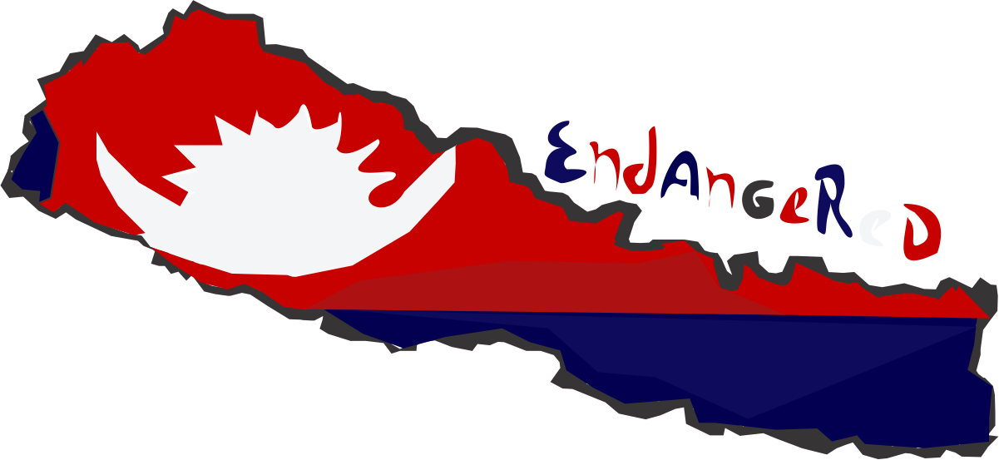

SOURCES I have used an extensive range of sources to gather the information within this site,
specifically the statistical data which is fairly tough to find. I thank each source sincerely,
and wish to highlight their great resources here:
ALALA RECOVERY PLAN
WIKIPEDIA
IUCN RED LIST – CONSERVATION STATUS ASSESSORS
ANIMAL INFO – EXTENSIVE STATISTICS
WILDSCREEN ARKIVE